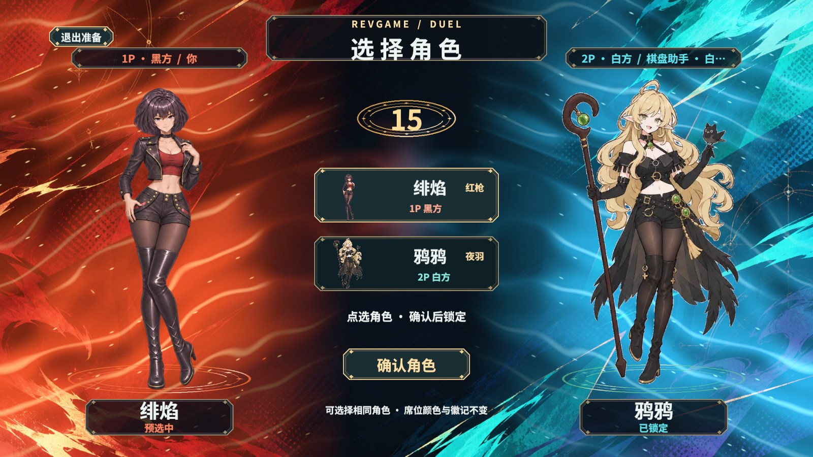
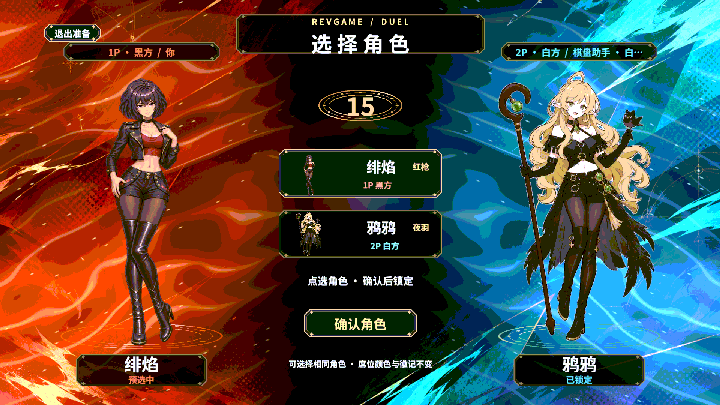

选角实景


流程和资源
- 首次加载
- 从 StartScene 冷启动。
rev_discover确认实际注册表，rev_call pvp.state确认在大厅且已启用真实 AB。rev_run通过本地人机决斗进入选角，确认背景 Sprite 已打进图集，裂隙 Shader 可用。 - 换角与重入
- 通过 EventSystem 点选鸦鸦，权威状态为双鸦鸦。切回绯焰，取消后回到大厅。重进选角并确认，双方锁定后进入 PvpDuelScene。
- 编译与收尾
- 进 Play 前的完整重编工单
f1cadb2703d545cd84f2ce76349a77fc已完成，零错误。运行与清理均通过，Unity Console 错误数为零，编辑器退出 Play 后回到 StartScene。 - 双平台资源
- PC 和 Android 各构建并校验 86 个包。图集唯一覆盖、包依赖和复制后的文件哈希已核对。Android 真机画面与帧率待设备验证。
- 换机字库
- 文本统一换行为 LF 后校验，438 份字库输入已核对。Unity 验证 1811 个字形可用，最后一次完整重编工单
79eeb7859fcc4184aaf7304399fc60fc零错误。
框架使用
RevUI 装配并关闭选角与加载面板，现有资源门面加载共享图集和材质。角色布局和火焰着色都由项目资产承载，双方选角仍走已有权威流程。